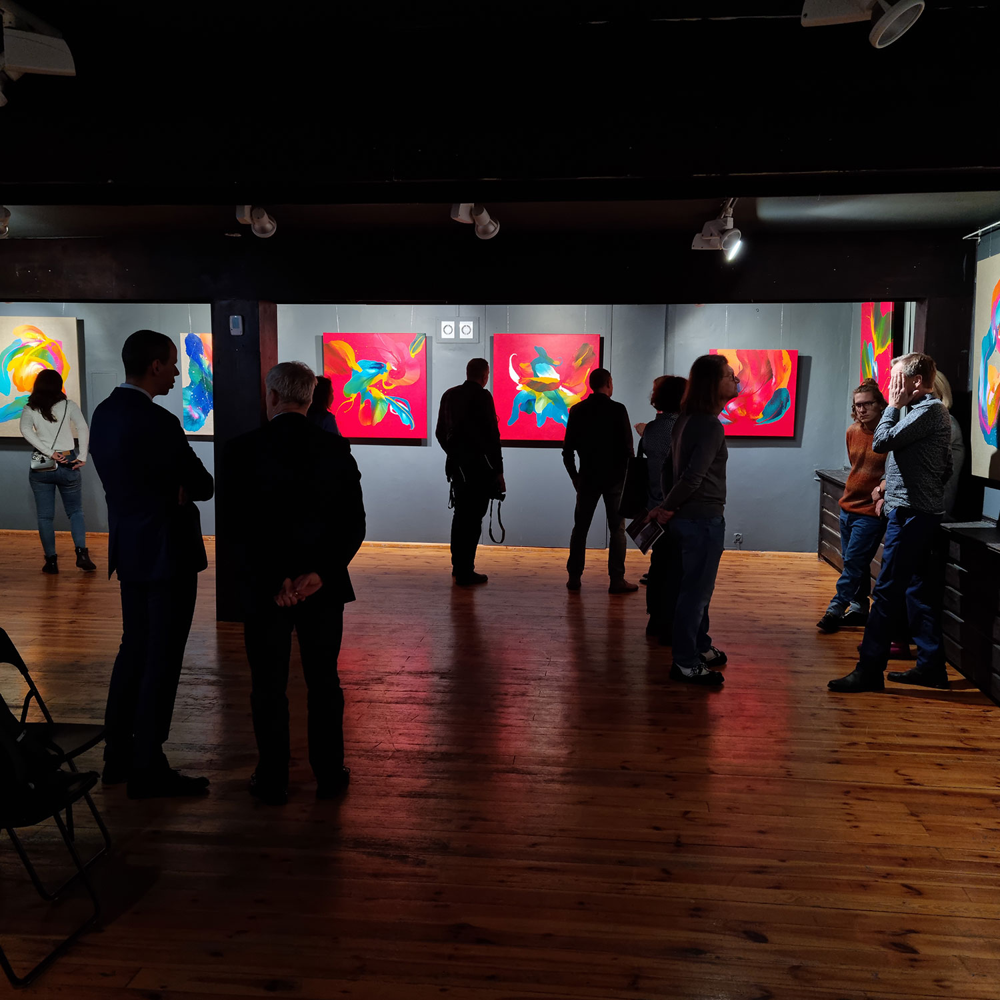

Not obvious forms
The museum
On 11th of January the Krajenska Land Museum’s Director Mr. Tomasz Pasieka and me opened my first museum solo show. It was great to see that I was not the only one to be so excited about the exhibition – the museum’s director was too. It was a museum that helped me to take my first steps torwards art. It is a place where I started drawing, I discovered pastels and a place I had my first contact with oil paint.
Musuem before “not obvious forms” was exhibiting objects associated with funeral rituals. Due to the exhibition the whole floor was painted in dark gray creating this gloomy, weighing you down atmosphere. It was a well-organized with exhibits landed by three different museums but just like funerals in our culture (and many others in western countries), left me with memento mori-kind of feeling.
With those surroundings it was hard to imagine the impact my bright and colourful art can have on the environment where it will be displayed. Left with this uneasy feeling, worried that my art will not be able to brighten up these gray walls, I was just hoping that after all exhibits will be return to the original museums the place will change enough to create at least neutral space.
Surprise
Boy, I was surprised… For me the transformation of the museum was like those nasty and horribly looking Gremlins that ate after midnight or were in contact with water went back being those cute big black eyes balls of fur. Just after seeing first images sent by Mr. Pasieka right before hanging I was stunt how the place changed. Seeing the artworks on the walls was even more exciting as the place started to be filled with life.
I was not the only one who was a bit speechless at first. An elder man who approached me just after I finished talking, who said that due to his profession he saw in his life many art shows, but when he went up the stairs and reached the floor with the exhibition he was left without words and then he just congratulated me on the show. For me it is the sweetest thing anyone could say about my art.
And this is yet another reason why artists should exhibit not only in big museums, but in those close to the people, those created by the communities and for the communities outside big cities. To make art more accessible.